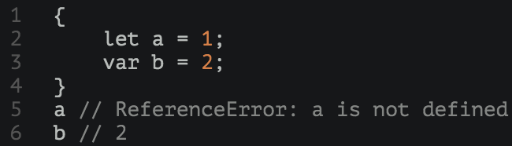

es6 learning
by 谢晓君
主要内容
- 使用ES6
- 变量声明
- 解构赋值
使用ES6
- 浏览器-chrome：启用实验性javascript
- 转码器-babel：使用npm安装babel-cli和babel-preset-es2015包
- node：使用node运行ES6代码时，有时需要使用严格模式，具体可以参考：ECMAScript 2015 (ES6) in Node.js
变量声明--let命令
ES6新增let命令用来声明变量，但是声明的变量只在let命令所在的代码块内有效。

let命令特性
- 块级作用域
- 不存在变量提升
- 不允许重复声明
块级作用域
 |
 |
不存在变量提升
let不像var会发生变量提升现象，所以，使用let声明的变量一定要先声明后使用，否则报错。

特殊的，在区块中使用let命令声明变量时，它声明的变量就绑定了这个区域，不再受外部的影响。在语法上，称为 暂时性死区（Temporal dead zone，简称TDZ）。

不允许重复声明

变量声明--const命令
ES6新增const命令用于声明常量，一旦声明，常量的值就不能被改变。常规模式下，const常量赋值虽然无效但是不会报错；严格模式下会报错。

复合型const变量
对于复合类型的变量，由于变量名不指向数据，而是指向数据所在的地址。const命令只是保证变量名的地址不变，但是并不能保证该地址的数据不变

const命令特性
- 只在声明所在块级作用域内有效
- 不存在变量提升，存在暂时性死区
- 不可重复声明
解构赋值
ES6允许按照一定模式，从数组和对象中提取值，按照对应位置，对变量进行赋值
ES6解构赋值-数组
ES6...操作
| rest | spread |
|---|---|
| 把逗号隔开的值序列组合成一个数组 | 把数组或类数组对象展开成一系列用逗号隔开的值 |
ES6解构赋值-对象
ES6解构赋值-字符串
ES6解构赋值-数字和布尔值
解构赋值的规则是：只要等号右边的值不是对象，就先将其转为对象
ES6解构赋值-null和undefined
由于undefined和null无法转为对象，所以对它们进行解构赋值时，都会报错
ES6解构赋值-可遍历结构
对于具有Iterator接口的数据结构，都可以采用数组形式的解构赋值。
ES6解构赋值-用途
| 变量交换 |
| 函数 |
| 模块 |